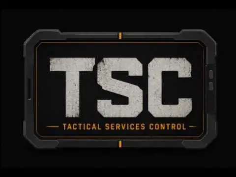
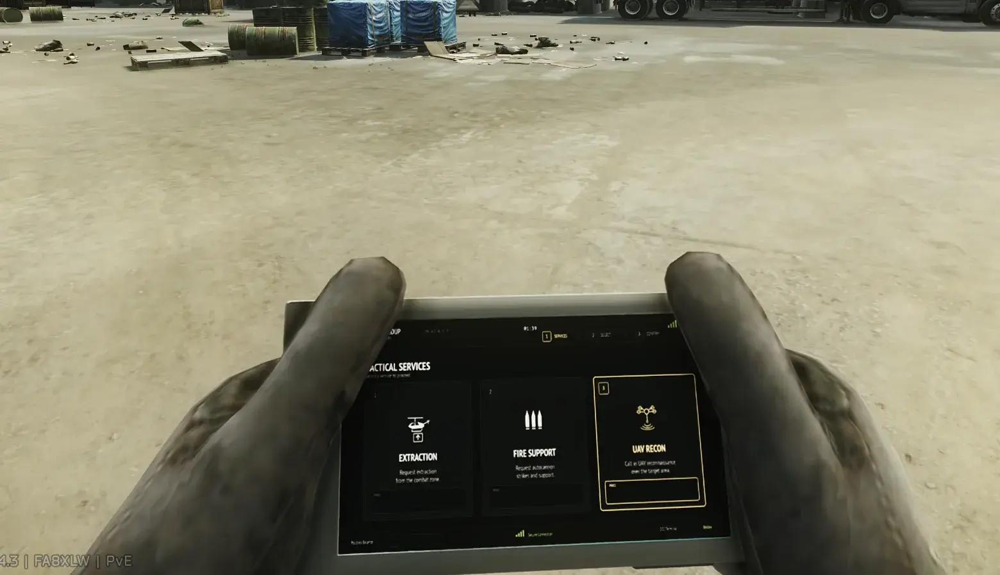

Tylevo's Tactical Service Control
- Downloads
- 4,612
- Favourites
- 41
- Mod lists
- 43
Tylevo’s Tactical Services Control
- A-10 Strafe and A-10 Double Pass with aircraft, GAU-8 audio, tracers, and impact effects.
- UH-60 Black Hawk Extraction and Priority Exfil.
- UAV Recon and Focused Sweep with a requester-only radar display.
- Purchase and deploy services from the animated TerraGroup TSC Uplink.
- Carried roubles, stash roubles, and configurable hybrid payment behavior.
- Persistent service authorizations with separate counts for every standard and upgraded option.
- Configurable prices, limits, payment rules, support settings, and Fika/headless behavior.
- Optional Project Fika support with host-authoritative requests and synchronized raid visuals.
- Bring the TerraGroup TSC Uplink into the raid.
- Press
Uto open the phone in purchase mode. - Press
1,2, or3to open Extraction, Fire Support, or UAV Recon. - Inside a category, press
1for the standard service or2for the upgraded option when available. - Press
Enteron the confirmation screen to purchase the selected authorization. - When you are ready to use it, press
Kto open the phone in deployment mode. - Press
1-6to choose one of your owned services, then pressLMBorEnterto deploy it.
The deploy phone only lists authorizations you currently own. Closing it with RMB, Backspace, or Escape does not consume anything.
U: Open the Uplink in purchase mode.K: Open the Uplink in deployment mode.1-6: Navigate phone menus and select owned services.Enter: Confirm a purchase, deployment, or targeting step.LMB: Deploy the selected authorization from the phone.Mouse 2/ middle mouse: Confirm A-10 and UH-60 targeting steps.RMB: Return to the previous phone screen.Alt + RMBorBackspace: Cancel active target designation.Escape: Close or stow the phone.
A-10 and UH-60 targeting uses the player camera. A rangefinder is not required. UAV Recon and Focused Sweep start immediately after deployment.
The purchase, deploy, and spotter-confirm keys can all be changed in F12. Phone zoom, FOV, and horizontal/vertical framing can also be adjusted there.
Local controls and phone presentation settings are available through the F12 BepInEx configuration manager.
Server and gameplay settings are managed from the TSC Dashboard:
https://127.0.0.1:6969/tsc/admin
The dashboard controls prices, payment sources, authorization limits, support behavior, and Fika/headless settings. It is localhost-only by default. Do not expose or port-forward it to the public internet.
Project Fika is optional. Solo SPT does not require it.
For Fika, install the same TSC version on the human host, every client, and the dedicated headless host when one is used. The raid host’s settings are authoritative while connected.
- Human-hosted Fika raids retain the original Arys A-10 runtime and damage path.
- Fika clients render synchronized support visuals and do not execute authoritative A-10 damage.
- Dedicated-headless A-10 damage is separately gated and remains experimental. Results can vary by map and mod combination.
- UAV radar is displayed only to the player who requested it and is never created on the headless host.
- Install UnityToolkit v2.0.1 and WTT CommonLib.
- Install Project Fika only when using multiplayer.
- Extract the TSC release ZIP directly into the SPT root.
- Start SPT normally.
After extraction, these folders should exist:
BepInEx/plugins/Tylevo.TacticalServicesControl/
SPT/user/mods/Tylevo.TacticalServicesControl/
Do not install SamSWAT Fire Support or Arys Reloaded alongside TSC. TSC is a derivative replacement and the packages conflict.
- Built for SPT 4.0.13.
- Project Fika is supported but optional.
- Dedicated-headless Fika A-10 damage is experimental and is not claimed to match the original human-host ballistic path in every setup.
- Remote third-person phone animation sync is not currently included.
- The phone’s inventory inspect presentation may still need polish.
- Back up profiles before testing new payment configurations.
TSC is derived from SamSWAT’s Fire Support and SamSWAT’s Fire Support - Arys Reloaded by Arys, with permission and attribution retained.
Additional credit goes to Tyrian for radar work, danauraborealis for Manimal Hacker Mod material used under the MIT license, and the SPT and Project Fika teams for their platforms and APIs.
Optional support: Ko-fi. Tips are voluntary and do not unlock downloads, features, early access, or support priority.
Description
Bring battlefield support into the raid with the TerraGroup TSC Uplink. Purchase an authorization from the phone, save it until you need it, then call in an A-10 strike, Black Hawk extraction, or UAV sweep without leaving the raid.
TSC is a full rework and expansion of SamSWAT’s Fire Support and Arys Reloaded. It replaces the old rangefinder-and-radial workflow with a purpose-built tactical phone, adds an in-raid economy, and supports both solo SPT and Project Fika.


Version
1.0.8
Tylevo’s Tactical Services Control v1.0.8 Public Beta
Install-ready beta package for SPT 4.0.13. Extract it into the SPT root while the game and server are closed.
This update follows the published v1.0.7 build and contains the changes below.
Highlights
- Support deployment now happens from the TSC Uplink phone. Buy an authorization, press the configurable deploy key, select the exact service you purchased, and designate the target without carrying the rangefinder.
- The phone can automatically zoom and reframe itself while raised. Its default zoom FOV is now 45 for a slightly wider view; FOV and horizontal/vertical framing remain configurable in F12 and restore cleanly when the phone is stowed. Existing custom FOV values are preserved.
- Purchase, deploy, and spotter-confirm keybinds are now visible in F12.
- A-10 single and double passes stay separate from purchase through deployment, so selecting one no longer spends or launches the other.
Controls And Workflow
U(configurable in F12 as Open uplink key) opens the TSC Uplink in purchase mode.- On the purchase phone, press
1,2, or3to open Extraction, Fire Support, or UAV Recon. Inside a category,1selects the standard service and2selects the upgraded variant when enabled. Press Enter on the confirmation screen to authorize payment. RMB returns to the previous screen; Escape closes the phone. K(configurable in F12 as Open deploy key) opens the Uplink in deployment mode after you own an authorization. Only services you currently own are listed. Press1-6to select one, then LMB or Enter to deploy it. RMB, Backspace, or Escape stows the phone without spending anything.- A-10 and UH-60 use camera-based target designation after deployment; the rangefinder is no longer required. Press
Mouse 2/middle mouse (configurable in F12 as Spotter confirm key) or Enter to confirm each targeting step. Alt+RMB or Backspace cancels targeting. - UAV Recon and Focused Sweep start directly after deployment and display the radar overlay only for the requesting player.
Payment And Authorizations
- Fixed authorizations being duplicated, not consumed, or restored with the wrong service type.
- Stash purchases are serialized and transactional. TSC restores the inventory if profile saving or authorization persistence fails, preventing lost roubles without a matching authorization.
PreferStashThenCarriednow falls back to carried roubles when stash payment is unavailable.- The purchase endpoint accepts plain, zlib, and deflate request bodies and returns a controlled failure instead of crashing on malformed or unexpected input.
- The authorization ledger now uses atomic saves, backups, corrupt-file preservation, and mutation rollback.
Fika And A-10
- Exactly one raid-world authority executes an A-10 strike. Single-player and human Fika hosts retain the original Arys runtime/ballistic behavior; clients are visual-only.
- Every support request carries a unique ID. In-flight and completed request gates prevent duplicate network packets from firing projectiles or consuming authorizations twice.
- Fika clients wait for the host/headless acceptance broadcast before starting A-10 visuals.
- Tracers and impact effects are aligned to the visible aircraft firing pass and keyed to the request, seed, and pass.
- Dedicated-headless A-10 damage is available through the experimental headless executor and Fika damage packets. This remains intentionally gated and experimental.
- UAV radar overlays are requester-local and are not created on a dedicated headless host.
- Fika integration startup/shutdown and duplicate-request retention are bounded and safe across repeated raid initialization.
Stability And Compatibility
- Fixed concurrent AssetBundle loading, including the UAV radar HUD double-load race.
- Added compatibility with Manimal’s HackerMod phone assets by reusing its complete phone bundle set when present.
- Fixed null-reference teardown paths in
SimpleSpinBlur, the fire-support pool, UI/controller cleanup, and phone camera restoration. - Hardened UH-60 extraction trigger cleanup and Fika extraction routing to reduce stuck black-screen exits.
- Restored the loud A-10 strike flyover while keeping UAV loiter audio quiet and non-looping.
Updating
Extract over the existing installation. Back up SPT/user/mods/Tylevo.TacticalServicesControl/config/tsc-config.json first if it contains custom dashboard settings.
Required dependencies are not bundled: UnityToolkit v2.0.1, WTT Client Common Lib, and WTT Server Common Lib. Project Fika is optional and only required for multiplayer.
Known Issues
- Remote third-person phone animation sync is not included.
- Phone inventory inspect presentation may still need polish.
Dependencies
Version
1.0.7
Tylevo’s Tactical Services Control v1.0.7
A stability-focused update for dashboard, Fika/headless/Radmin setups, stash payments, phone controls, and release packaging.
Highlights
- Fixed Radmin/Fika stash-backed purchases through the active SPT backend.
- Fixed compressed
/tsc/purchaserequest handling. - Fixed CarriedRoubles so it works locally without dashboard/config routing.
- Fixed stale dashboard payment settings not applying quickly enough.
- Fixed Fika UH-60 / Priority Exfil broadcasts so client-called extracts are shared to all clients.
- Restored quick-use/manual phone restore safety to prevent stuck hands.
- Reduced config polling and repeated Fika settings log spam.
Important Fika / Radmin Notes
Install the same TSC version on the host/headless server and every Fika client.
Do not point Server Config URL at another player’s machine for purchases. Purchases now use the active game/SPT backend path automatically.
The host/headless dashboard controls raid settings while connected. Client-local dashboard changes do not override host settings during a joined raid.
Dashboard URLs:
- Local:
https://127.0.0.1:6969/tsc/admin - Trusted LAN/Radmin/VPN:
https://<host-ip>:6969/tsc/admin
Do not port-forward the dashboard publicly.
Clean Install Note
Normal users can extract over an existing install.
If you tested pre-release builds, delete these first:
BepInEx/plugins/Tylevo.TacticalServicesControl/
SPT/user/mods/Tylevo.TacticalServicesControl/
Dependencies
Version
1.0.6
Install-ready beta package. Extract into the SPT root. Game and server must be closed while extracting.
Fixed
- Fika stash purchases should be fixed.(not tested fully but by word of mouth) Buying support with stash roubles now works for every player in a Fika session with no extra setup. TSC routes its server requests through the game’s own connection, so it always reaches the correct server and charges the right player no matter how the session is hosted (direct, LAN, or VPN). The Server Config URL is no longer needed and can be left at its default.
Updating
Extract over your existing install; no uninstall needed. If you customized the dashboard config, back up SPT/user/mods/Tylevo.TacticalServicesControl/config/tsc-config.json first and restore it after.
Required dependencies, not bundled: UnityToolkit v2.0.1, WTT Client Common Lib, WTT Server Common Lib. Project Fika is optional and only needed for multiplayer.
Dependencies
Version
1.0.5
Install-ready beta package. Extract into the SPT root. Game and server must be closed while extracting.
Fixed
- Fika clients can now use stash purchases. A host running default config broadcast its own loopback address (127.0.0.1) to every client, and that overrode each client’s configured host address - so a client’s purchase went to its own machine and failed with “Check the TSC server and dashboard connection.” A loopback host broadcast is now ignored, so a client’s own Server Config URL (pointed at the host’s IP) takes effect. Zero-config alternative: the host can set its Server Config URL to its LAN IP, or use the CarriedRoubles payment source (fully client-side, no server needed).
- UH-60 extraction as a Fika host no longer strands the lobby. A host extracting first used to kill the hosted session while other players kept playing into a dead lobby. Extraction now routes through Fika’s own extract flow (host goes to spectate, the session stays alive). Solo and non-Fika installs are unchanged.
Changed
- Phone navigation simplified. Number keys (1-3) now open a category directly instead of only highlighting it. RMB steps back one screen, and Escape closes the phone. Enter still only confirms on the final screen, so stray input cannot spend money. (Note: RMB used to cancel the whole session - it now goes back a screen; Escape is the immediate close.)
- The TerraGroup TSC Uplink now looks like special gear - orange grid background and the orange SPEC tag, matching the rangefinder, so it sorts and reads as special-slot equipment.
Updating
Extract over your existing install; no uninstall needed. If you customized the dashboard config, back up SPT/user/mods/Tylevo.TacticalServicesControl/config/tsc-config.json first and restore it after.
Required dependencies, not bundled: UnityToolkit v2.0.1, WTT Client Common Lib, WTT Server Common Lib. Project Fika is optional and only needed for multiplayer.
Dependencies
Version
1.0.4
Install-ready beta package. Extract into the SPT root. Game and server must be closed while extracting.
Fixed
-
Carried-rouble purchases no longer lose your money. Authorizations bought with carried roubles used to vanish within seconds of purchase the service showed AUTH REQ again unless you deployed it almost immediately, and the roubles were spent either way. These purchases now persist for the whole raid and following raids and can be deployed whenever you are ready.
-
Fika: non-host players now see A-10 tracers reliably. Playback was scheduled against the host’s clock; depending on which machine had been running longer, tracers appeared all at once or never. Clients now time playback from packet arrival.
-
Fika: non-host players now see the GAU-8 impact explosions. Detonation effects only existed on the host, which runs the ballistics. Clients now emit the same explosion effect at each round’s impact point, so the strafe looks the same for everyone.
-
Potentially fixed a freeze after using the phone where loot pickups locked movement and camera (weapon still worked) until a stance change. Opening the phone from its special slot and cancelling with the hotkey ran two hand-restore flows at once; quick-use sessions are now restored by the game alone. The race was intermittent, so please report if it still occurs on this version.
-
Carried-rouble payment now counts money in your secure container. The previous scan excluded it, so purchases failed with Carried Roubles: 0 despite the cash being on your character.
-
Stash balance now syncs outside raids too. The phone previously showed carried-only balances in menus, the hideout, and the first seconds of a raid because config requests carried no profile id; stash-based payment sources now display the correct available total everywhere.
Changed
-
Rebalanced default prices for new installs: Extraction 300k (was 50k), Priority Exfil 450k (was 150k), UAV 125k (was 100k), Focused Sweep 90k (was 75k). A-10 Strafe (250k) and Double Pass (450k) unchanged. Max stored authorizations per service is now 2 (was 3). Existing configs keep their saved values.
-
TSC now declares a BepInEx incompatibility with SamSWAT’s Fire Support: Arys Reloaded (requested by Arys). TSC is its derivative replacement and the two cannot run together; TSC is skipped with a clear log message if both are installed. HeliCrash: Arys Reloaded remains fully compatible.
-
Dashboard is easier to find. Opening /tsc in a browser now redirects to the dashboard at /tsc/admin, and a missing dashboard install produces an error that names the exact folder the server expects instead of a bare not-found message.
Updating
Extract over your existing install; no uninstall needed. If you customized the TSC dashboard config, back up SPT/user/mods/Tylevo.TacticalServicesControl/config/tsc-config.json first and restore it after.
Required dependencies, not bundled: UnityToolkit v2.0.1, WTT Client Common Lib, WTT Server Common Lib. Project Fika is optional and only needed for multiplayer.
Dependencies
Version
1.0.3
Compatibility fix: mod conflicts breaking the phone and displaying an error in inspect mode or crashing game when loading in.
Dependencies
Version
1.0.2
Install-ready beta package. Extract into the SPT root.
Critical fix
- Fixed infinite loading on installs without Fika (bug introduced in v1.0.1). Fika-typed networking code now lives in a separate
Tylevo.TacticalServicesControl.Fika.Interop.dllthat is only loaded when Fika is actually installed, so other mods’ assembly scans no longer crash on single-player installs. - Fika remains a soft dependency: no more missing
com.fika.coreerror on single-player installs, and one package works for both Fika and non-Fika users.
Skipped v1.0.1, please update, or can hang the game on loading if you do not have Fika installed.
Archive root contains:
- BepInEx/
- SPT/
- README.md
Required dependencies, not bundled:
- UnityToolkit v2.0.1
- WTT Client Common Lib
- WTT Server Common Lib
- Project Fika, optional and only for multiplayer/Fika use
TSC references WTT Common Lib from the installed dependency DLLs. WTT Common Lib is not redistributed inside this package.
Dependencies
Version
1.0.0
Description
A BepInEx mod that reworks SamSWAT’s Fire Support / Arys Reloaded into a TerraGroup-style tactical support system for SPT and Fika.
This mod adds a TerraGroup TSC Uplink phone that lets you buy support authorizations in raid, then deploy them later from the YY gesture menu.
Currently available support options:
- A-10 autocannon strafe
- A-10 Double Pass
- UH-60 Black Hawk extraction
- Priority Exfil
- UAV Recon
- Focused Sweep
How To Install
- Install the required dependencies:
- UnityToolkit v2.0.1
- WTT Client Common Lib
- WTT Server Common Lib
- Project Fika, only for multiplayer/Fika use
- Download the TSC release archive.
- Extract it directly into your SPT root folder.
- Confirm these folders exist:
BepInEx/plugins/Tylevo.TacticalServicesControl/SPT/user/mods/Tylevo.TacticalServicesControl/
- Do not install the old SamSWAT Fire Support or Arys Reloaded mod alongside TSC.
Planned Updates
- Mortar/artillery support.
- Phone-as-designator/rangefinder replacement.
- Remote third-person phone animation sync.
- More phone model/inspect polish.
Credits
- SamSWAT: original Fire Support concept and implementation.
- Arys: SamSWAT’s Fire Support - Arys Reloaded / SPT 4.x basis.
- danauraborealis: Manimal Hacker Mod material under MIT license.
- Accurate Circular Radar / Tyrian Radar Standalone: radar HUD material, if applicable.
- SPT and Project Fika: compatibility targets.
Disclaimer
This mod is not affiliated with Big Silly Goose, SPT, Project Fika, SamSWAT, Arys, or the other credited authors.
Tylevo’s Tactical Services Control is released under Creative Commons Attribution-NonCommercial 4.0 International, matching the upstream Arys Reloaded source license.
The dashboard is localhost-only by default. Do not port-forward it.